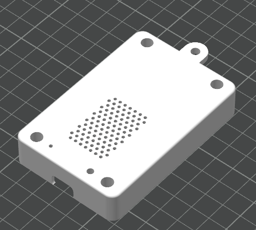
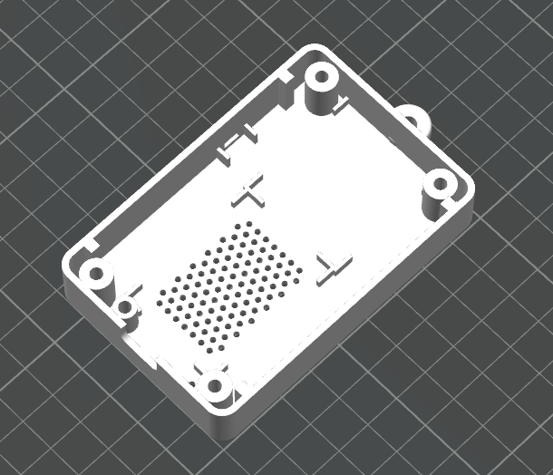
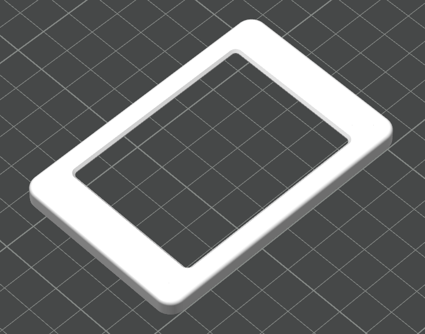
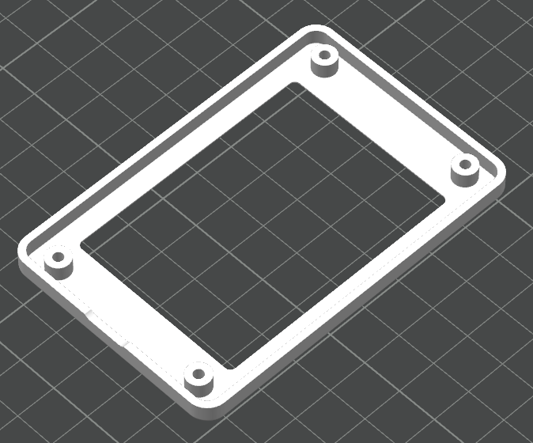

0무엇을 만드나
화면 첫 페이지에서 네 가지 기능을 골라 씁니다. 모든 조작은 화면 터치로 해요.
만드는 순서
- 준비물 갖추기-
- 아두이노 IDE 설치하고 ESP32 준비 (처음 한 번)약 20분
- 코드 받아서 내 보드 이름 정하기약 5분
- 보드 설정 맞추고 업로드약 15분 (첫 컴파일 포함)
- 케이스 출력해서 넣기출력 시간 별도
- 와이파이 넣고 쓰기약 5분
막히면 7. 문제 해결을 먼저 보세요. 실제로 만들면서 겪은 문제와 해결 방법을 모아 두었습니다.
기기의 에 이 페이지로 오는 QR 코드가 있어요. 쓰는 사람은 6. 사용법만 보면 됩니다.
1준비물
| 품목 | 설명 | 꼭? |
|---|---|---|
| LCDwiki ES3C28P | 2.8인치 ESP32-S3 터치 보드 (240×320, 정전식 터치, 스피커·마이크 내장, 플래시 16MB·PSRAM 8MB). 터치 없는 ES3N28P는 안 됩니다. | 필수 |
| USB-C 데이터 케이블 | 충전 전용 케이블은 PC가 보드를 못 알아봐요. 휴대폰과 PC를 연결해 사진을 옮길 수 있던 케이블이면 됩니다. | 필수 |
| PC (윈도우·맥) | 아두이노 IDE를 설치할 수 있는 컴퓨터. 학교 PC라면 설치 권한이 필요해요. | 필수 |
| 리튬폴리머 배터리 803035 · 3.7V 800mAh | 케이스 안에 딱 맞는 크기(두께 8 × 폭 30 × 길이 35mm). 단자는 JST PH1.25mm 2핀이어야 보드에 꽂혀요. 자세한 건 배터리 고르기. 없으면 USB 선을 꽂아 두고 씁니다. | 선택 |
| 3D 출력 케이스 | 뒤판 + 앞 베젤 두 부품. 5. 케이스 참고. | 선택 |
| M3×12 렌치볼트 4개 | 육각 홈 볼트(소켓 머리). 케이스를 조립할 때 씁니다. 2.5mm 육각렌치도 함께 준비하세요. | 케이스 쓸 때 |
| 2.4GHz 와이파이 | 탁상시계의 자동 시간·날씨용. 휴대폰 핫스팟도 됩니다. | 선택 |
| DS3231 시계 모듈 | 뒷면 I2C 단자에 꽂으면 배터리가 완전히 닳아도 시간이 남아요. 와이파이가 있으면 없어도 됩니다. | 선택 |
2아두이노 IDE 준비 (처음 한 번)
아두이노 IDE는 코드를 보드에 올려 주는 프로그램이에요. 이 단계는 컴퓨터마다 처음 한 번만 하면 됩니다.
- 아두이노 IDE 2 설치 arduino.cc/en/software에서 Arduino IDE 2.x를 내려받아 설치합니다. 설치 중에 드라이버를 설치할지 물으면 모두 설치를 누르세요.
- ESP32 보드 주소 넣기
아두이노 IDE를 열고 (맥은 )을 엽니다. 아래쪽 추가 보드 관리자 URL 칸에 아래 주소를 붙여 넣고 확인.
칸에 다른 주소가 이미 있으면 옆 버튼을 눌러 새 줄에 추가하세요.https://espressif.github.io/arduino-esp32/package_esp32_index.json - ESP32 보드 설치
왼쪽 세로 막대에서 보드 매니저 아이콘(두 번째, 보드 모양)을 누르고
esp32를 검색합니다. esp32 by Espressif Systems를 찾아 설치. 버전은 3.3.x를 권해요. 크기가 커서 몇 분 걸립니다. - LovyanGFX 라이브러리 설치
왼쪽 세로 막대에서 라이브러리 매니저 아이콘(세 번째, 책 모양)을 누르고
LovyanGFX를 검색해 설치합니다. 화면에 글자와 그림을 그려 주는 라이브러리예요. 나머지(블루투스·와이파이 등)는 ESP32 보드에 들어 있어서 따로 설치할 것이 없습니다.
메뉴가 영어로 나오면 에서 한국어로 바꿀 수 있어요. 이 설명서는 메뉴 이름을 한국어와 영어로 함께 적었습니다.
3코드 받고 내 보드 이름 정하기
- 파일 받아서 압축 풀기
8. 파일 받기에서 zip을 받아 압축을 풉니다. zip 안에서 바로 열면 저장이 안 되니 꼭 풀어 주세요. 바탕화면이나
문서\Arduino폴더에 두면 찾기 쉬워요. - 스케치 열기
code/ClassHelper/ClassHelper.ino를 두 번 누르거나, 아두이노 IDE에서 로 엽니다. 위쪽에config.h,app_clock.h같은 탭이 여러 개 함께 열리면 제대로 연 거예요.ClassHelper폴더 이름과ClassHelper.ino파일 이름은 같아야 합니다. 폴더 이름을 바꾸면 아두이노 IDE가 폴더를 새로 만들자고 해요. 같은 폴더의partitions.csv도 지우지 마세요. config.h맨 위 세 줄 바꾸기config.h탭을 누르면 맨 위에 이 세 줄이 있어요. 큰따옴표 안만 바꿉니다.#define DEVICE_TITLE "교탁 도우미" // 첫 화면 큰 제목 #define DEVICE_OWNER "우리 반" // 첫 화면·시계에 작게 (반 이름, 선생님 이름) #define BT_NAME "ClassHelper-01" // 블루투스 이름 (영어·숫자·- 만)BT_NAME은 PC 블루투스 목록에 보이는 이름이에요. 한 교실에서 여러 대를 만들면ClassHelper-01,-02처럼 서로 다르게 정하세요. 같으면 PC가 다른 보드에 붙을 수 있어요.
와이파이는 코드에 적지 않아도 됩니다. 업로드한 뒤 보드 화면의 에서 넣어요. 그래서 이 코드를 다른 사람과 나눠도 비밀번호가 새지 않습니다.
4보드 설정 맞추고 업로드
- 보드를 PC에 꽂고 포트 고르기
USB-C 데이터 케이블로 보드를 PC에 꽂습니다. 위쪽 보드 선택 칸(또는 )에서 새로 생긴 포트를 고릅니다. 윈도우는
COM3처럼, 맥은/dev/cu.usbmodem…처럼 보여요. 무엇인지 모르겠으면 보드를 뺐다 꽂아 보며 새로 생기는 것을 고르세요. - 보드 고르기
- 도구 메뉴 설정을 아래 표처럼 맞추기 (가장 중요해요)
도구(Tools) 메뉴 항목 고를 값 틀리면 Flash Size 16MB (128Mb) 켜지지 않음 (파티션 오류) Flash Mode QIO 80MHz 켜지지 않을 수 있음 PSRAM OPI PSRAM 화면이 느리거나 멈춤 Partition Scheme Custom "스케치가 너무 큼" 오류 USB CDC On Boot Enabled 시리얼 모니터에 글이 안 나옴 나머지 그대로 두기 - Custom을 고르면 스케치 폴더의
partitions.csv를 씁니다. 블루투스·와이파이·한글 글꼴이 다 들어가서 프로그램이 3MB가 넘기 때문에, 16MB 플래시를 넓게 쓰도록 나눠 둔 파일이에요. - 업로드
위쪽 → (업로드) 버튼을 누릅니다. 처음에는 한글 글꼴 때문에 컴파일에 몇 분 걸려요. 아래 창에
Writing at …%가 올라가다가Hard resetting via RTS pin...이 나오면 끝입니다. - 확인 보드 화면에 첫 화면(기능 네 개 + 설정 · 점검)이 나오면 성공! 화면이 까맣다면 보드의 RST(리셋) 버튼을 한 번 누르세요. 그래도 까맣다면 7. 문제 해결로.
보드를 다시 고르거나 아두이노 IDE·ESP32 보드를 업데이트하면 위 도구 메뉴 설정이 기본값(Huge APP, 4MB 등)으로 돌아가 있을 수 있어요. 업로드할 때마다 한 번 확인하는 습관을 들이세요.
5케이스 만들기
케이스는 뒤판과 앞 베젤 두 부품이고, M3×12 렌치볼트 4개로 조립합니다. 파일은 8. 파일 받기의 zip 안 models/ 폴더에 있어요.




| 파일 | 크기 (가로×세로×높이) | 개수 |
|---|---|---|
01_뒤판_back_shell.stl | 59.6 × 100.4 × 16.7 mm | 1 |
02_앞베젤_front_bezel.stl | 59.6 × 90.4 × 5.3 mm | 1 |
| M3×12 렌치볼트 (육각 홈 볼트) | 머리 지름 약 5.5mm, 길이 12mm | 4 |
배터리 고르기
배터리 없이 USB 선만 꽂아 써도 됩니다. 교탁에서 선 없이 쓰고 싶을 때 아래 배터리를 케이스 안에 넣으세요.
| 항목 | 맞는 것 |
|---|---|
| 제품 이름으로 찾기 | 리튬폴리머 배터리 충전지 803035 3.7V 800mAh |
| 크기 | 803035 = 두께 8.0mm × 폭 30mm × 길이 35mm — 이 케이스 안에 딱 맞아요. 이보다 크면 뚜껑이 닫히지 않습니다. |
| 전압 | 3.7V (1셀). 7.4V 같은 2셀 배터리는 보드가 망가져요. |
| 단자 | JST PH1.25mm 2핀 (핀 간격 1.25mm). 흔한 PH2.0(2.0mm 간격) 단자는 크기가 달라 꽂히지 않아요. 살 때 단자 이름을 꼭 확인하세요. |
| 보호회로 | 과충전·과방전 보호회로(PCM)가 붙은 것. 대부분 배터리 끝에 얇은 기판이 붙어 있어요. |
꽂기 전에 +/− 방향 확인! 같은 PH1.25 단자라도 파는 곳에 따라 빨간 선(+)과 검은 선(−)의 위치가 반대인 배터리가 있어요. 보드 뒷면 배터리 단자 옆의 + / − 표시와 배터리 선 색이 맞는지 확인하고 꽂으세요. 반대로 꽂으면 보드가 망가질 수 있습니다. 반대라면 억지로 꽂지 말고 선생님께 보여 주세요.
- 배터리는 USB-C를 꽂으면 보드가 충전해 줘요. 따로 충전기가 필요 없어요.
- 케이스에 넣을 때 배터리가 볼트 기둥이나 날카로운 모서리에 눌리지 않게 하고, 선은 접히지 않게 둥글게 정리합니다. 양면테이프로 뒤판 바닥에 살짝 붙여 두면 흔들리지 않아요.
- 배터리가 부풀었거나, 충전할 때 뜨거워지면 바로 빼고 쓰지 마세요. 버릴 때는 폐건전지·폐배터리 수거함에 넣습니다.
출력하기
- 두 파일 모두 파일 그대로의 방향(넓고 평평한 면이 바닥)으로 놓고 출력합니다. 뒤판은 바깥면이, 앞 베젤은 앞면이 바닥에 닿아요.
- 재료는 PLA나 PETG면 충분해요. 볼트가 기둥에 조여 들어가야 하니 벽(외곽선)은 3겹 이상을 권합니다.
- 두 부품을 다른 색으로 출력하면 보기 좋아요. 일반 가정용·학교용 3D 프린터 출력판에 둘 다 한 번에 올라갑니다.
조립하기
- 보드를 뒤판에 넣기 화면이 위를 보게 해서 보드를 뒤판 안에 넣습니다. USB-C 단자가 뒤판의 터진 쪽으로 오게 맞추세요. 배터리(803035)를 쓴다면 먼저 +/− 방향을 확인하고 PH1.25 단자에 꽂은 뒤, 배터리를 보드 밑 빈 칸에 눕히고 선을 정리합니다.
- 앞 베젤 덮기 베젤의 네 기둥이 뒤판 네 귀퉁이 구멍과 맞도록 덮습니다. 화면 창이 화면과 맞는지 확인하세요.
- 뒤에서 볼트 4개 조이기 통째로 뒤집어 뒤판 바깥 네 귀퉁이 구멍에 M3×12 렌치볼트를 넣고, 2.5mm 육각렌치로 앞 베젤 기둥에 조입니다. 기둥 구멍(2.5mm)에 볼트가 나사산을 내며 들어가서 처음엔 빡빡해요. 대각선 순서(왼쪽 위 → 오른쪽 아래 → 오른쪽 위 → 왼쪽 아래)로 조금씩 조이고, 머리가 닿으면 멈추세요. 너무 세게 조이면 플라스틱 기둥이 갈라집니다.
- 켜서 확인 USB-C를 꽂아 화면이 켜지는지, 화면 네 귀퉁이 터치가 잘 되는지(에서 눌러 보면 점이 찍혀요) 확인합니다.
조립할 때 꼭 지킬 것
- 보드 뒷면 BOOT 버튼이 눌리지 않게 하세요. 켜는 순간 BOOT가 눌려 있으면 보드가 '프로그램 올리기 대기'로 들어가서 화면이 아예 켜지지 않아요. 케이스 안쪽이 버튼에 닿지 않게 0.5~1mm 띄웁니다. (이 코드는 BOOT 버튼을 쓰지 않아요.)
- USB-C 구멍은 케이블을 꽂을 수 있게 열어 둡니다. 탁상시계는 충전선을 꽂아 두고 쓰는 경우가 많아요.
- 스피커와 마이크 구멍을 막지 마세요. 막히면 효과음이 작게 들리고 소음 신호등이 소리를 덜 잡아요.
- 배터리를 넣는다면 배터리 선이 날카로운 모서리에 눌리지 않게 합니다.
6사용법
보드를 켜면 첫 화면에 기능 네 개와 설정 · 점검 버튼이 나옵니다.
어디서나 똑같은 조작
| 이렇게 하면 | 이렇게 돼요 |
|---|---|
| 왼쪽 위 집 모양을 0.7초 누르고 있기 | 첫 화면으로. 노란 막대가 다 차면 돌아가요. 짧게 누르면 아무 일도 없어요. |
| 바로 끄기(절전) | |
| 절전 중에 화면 누르기 | 다시 켜지고 하던 화면으로 돌아가요. 깨울 때 누른 터치는 버튼으로 눌리지 않아요. |
- 저절로 절전: 한동안 안 만지면 화면이 먼저 어두워졌다가(20초 전) 절전해요. 시간은 설정의 안 만지면에서 바꿉니다(처음 10분). 프레젠터·소음 신호등·탁상시계 화면에서는 수업 중에 꺼지지 않게 자동 절전을 하지 않아요.
- 배터리 (803035 3.7V 800mAh를 넣었다면): USB-C를 꽂으면 충전돼요. 배터리가 거의 없으면 꺼지기 전에 스스로 절전합니다. 충전한 뒤 화면을 누르세요.
💣 지뢰찾기
| 조작 | 동작 |
|---|---|
| 칸을 짧게 | 지금 모드 동작 (열기 모드 = 열기, 깃발 모드 = 깃발) |
| 칸을 길게 | 반대 동작 (열기 모드에서 길게 = 깃발) |
| 누른 채 손가락 밀기 | 눌린 칸이 따라와요. 원하는 칸에서 떼면 실행 |
| 숫자 칸 | 주변 깃발 수가 숫자와 같으면 나머지를 한 번에 열기 |
| 위쪽 얼굴 / 아래 왼쪽 / 아래 오른쪽 | 새 게임 / 열기·깃발 모드 바꾸기 / 메뉴 (난이도·최고 기록) |
처음 누른 칸 주변에는 지뢰가 없어요. 첫 화면에 다녀와도 하던 판이 그대로 남아요.
🚦 소음 신호등
초록 좋아요 · 노랑 조금만 작게 · 빨강 너무 시끄러워요. 아래 막대는 지금 소리, 그래프는 최근 1분입니다.
- 먼저 조용한 소리 저장: 교실이 조용할 때 아래 오른쪽 기준을 누르면 3초 동안 잽니다. 처음 켤 때는 저절로 시작돼요. 교실이 바뀌면 다시 누르세요.
- 모드 고르기: 수업 보통 · 모둠 너그럽게 · 시험 엄격하게
| 모드 | 노랑 (조용할 때보다) | 빨강 |
|---|---|---|
| 수업 | 10단계 커지면 | 18단계 |
| 모둠 | 15단계 | 24단계 |
| 시험 | 6단계 | 12단계 |
경고음은 빨강이 2초 넘게 이어질 때만 울리고, 한 번 울리면 10초 쉬어요. 위쪽 경고음 켬/끔으로 끌 수 있어요. 단계는 소음계의 데시벨이 아니라 마이크 안에서 잰 상대적인 크기입니다.
🎤 프레젠터
처음 한 번: PC와 블루투스 연결
- PC
- 목록에서 보드 이름(예:
ClassHelper-01)을 고릅니다. 이름은 프레젠터 연결 화면과 에 나와요. - 프레젠터 위쪽 점이 초록이면 연결 끝. 다음부터는 켜기만 하면 이어져요.
위쪽 오른쪽 PPT / 구글을 쓰는 프로그램에 맞춰 주세요. 키 입력이 가도록 PC에서 슬라이드쇼 창을 한 번 클릭해 두세요.
| 아래 탭 | 할 수 있는 것 |
|---|---|
| ① 넘기기 | 이전 다음 · 처음부터 이 장부터 끝내기 · 번호로 가기(숫자 → 이동) |
| ② 포인터 | 레이저 펜 지우개 화살표 다 지우기 · 가운데 판을 문지르면 마우스, 톡 누르면 클릭 (펜·지우개일 때는 문지르면 그려짐) |
| ③ 화면·소리 | 검은 화면 흰 화면(한 번 더 누르면 돌아옴) · PC 소리 - 음소거 소리 + · 동영상 재생 커서 숨기기 |
| ④ 타이머 | 1·3·5·10분, ±1분, 시작/멈춤. PC 연결 없이도 되고, 다른 탭에서도 남은 시간이 보여요. 끝나면 빨갛게 깜빡이며 알림 → 화면을 누르면 멈춤. |
구글 모드에서는 펜·지우개·화살표·다 지우기·동영상·커서 숨기기가 회색이에요. 구글 슬라이드에 그 단축키가 없어서입니다.
🕰 탁상시계
- 위쪽 줄: 날짜와 날씨 위치, 배터리 옆 점 (최근에 받음 · 받는 중 · 인터넷 끊김)
- 아래 칸: 날씨 그림·기온·날씨·습도, 미세먼지·초미세먼지 등급. 30분마다 새로 받아요.
- 인터넷이 끊기면: 시계는 그대로 가요. 날씨는 3시간이 지나면 흐리게 "○시간 전"으로, 12시간이 지나면 사라지고, 인터넷이 돌아오면 다시 받아요.
| 등급 | 미세먼지 PM10 | 초미세먼지 PM2.5 |
|---|---|---|
| 좋음 | 0~30 | 0~15 |
| 보통 | 31~80 | 16~35 |
| 나쁨 | 81~150 | 36~75 |
| 매우나쁨 | 151 이상 | 76 이상 |
단위 ㎍/㎥, 환경부 예보 등급 기준. 미세먼지는 계산으로 예측한 값이라 에어코리아 측정소 값과 조금 다를 수 있어요.
화면을 한 번 누르면 시계 설정이 나와요.
- 시간 맞추기: 년·월·일·시·분을 - +로 (길게 누르면 빨리) → 저장. 와이파이가 있으면 인터넷 시간으로 바로 맞춰요.
- 방향 바꾸기: 충전선이 나오는 쪽(바닥으로 둘 쪽) 가장자리를 누르면 그쪽이 아래가 돼요. 세로·가로 네 방향.
- 모양 밝게 ↔ 어둡게 · 초침 켜기/끄기
⚙️ 설정
| 항목 | 고를 수 있는 것 |
|---|---|
| 소리 크기 · 화면 밝기 | 끔·작게·보통·크게 / 어둡게·보통·밝게 |
| 안 만지면 | 3분·10분·30분 뒤 절전 / 시계로(절전 대신 탁상시계) / 안 함 |
| 화면 방향 | 기본 · 뒤집기 (보드를 거꾸로 세워 둘 때) |
| 켜면 바로 시작 | 홈·지뢰·소음·발표·시계 중 켜자마자 열 기능 |
| 아래 버튼 | 점검 와이파이 절전 첫 화면 |
| 위쪽 오른쪽 도움말 | 이 설명서로 오는 QR 코드와 블루투스 이름 |
점검 화면에서는 터치·오디오·블루투스·마이크·배터리 상태를 보고, 효과음 듣기로 스피커를 시험해요. BT 기억 지우기는 3초 안에 두 번 누르면 기억한 PC를 모두 지우고 다시 켜집니다.
🌐 와이파이와 날씨 위치
- + 주변 와이파이 찾아서 추가 → 목록에서 고르기 (자물쇠 = 비밀번호 있음, 막대 = 신호 세기)
- 화면 키보드로 비밀번호 → 확인. 대문자 대·소문자, #+= 기호, 지움 한 글자 지우기. 틀리지 않게 글자가 그대로 보여요.
- 저장하면 바로 연결해 보고, 맨 위 줄에 "연결 잘 됨" 또는 안 되는 이유가 나와요.
- 3개까지 저장돼요 (학교·집·핫스팟). 주변에 있는 것 중 신호가 센 것에 붙어요. 숨긴 와이파이는 직접 입력.
- 지우기는 지우기 → 정말? 두 번 누르기.
- 날씨 위치 바꾸기: 자동(주변 와이파이 → 안 되면 인터넷 주소로 찾기) 또는 도시 17곳(서울·인천·수원·춘천·강릉·청주·대전·천안·전주·광주·목포·대구·포항·울산·부산·창원·제주) 중 고르기.
안 되는 와이파이: 5GHz 전용, 접속하면 로그인 화면이 뜨는 와이파이, 아이디까지 넣는 업무용 와이파이. 이럴 땐 휴대폰 핫스팟(2.4GHz)을 쓰세요. 위치 설명에 "인터넷 주소로 찾음(대략)"이 보이고 엉뚱한 곳이면 도시를 직접 고르세요.
7막힌 곳과 해결
업로드할 때
"스케치가 너무 큼" / text section exceeds available space
이 Custom인지 확인하세요. Huge APP(3MB)으로는 이 프로그램이 들어가지 않아요. 스케치 폴더에 partitions.csv가 있어야 합니다.
업로드는 됐는데 화면이 안 켜지고, 시리얼에 "exceeds flash chip size 0x400000"
가 4MB로 되어 있는 거예요. 16MB (128Mb)로 바꾸고 다시 업로드하세요. 이 보드는 16MB인데, 설정이 4MB면 넓혀 둔 파티션을 보드가 받아들이지 못합니다.
포트가 안 보여요 / 업로드가 "Failed to connect"로 실패해요
- 케이블이 데이터용인지 확인하세요. 다른 케이블로 바꿔 보는 게 가장 빠릅니다.
- 강제로 업로드 모드 넣기: 보드 뒷면 BOOT를 누른 채 RST를 눌렀다 떼고, BOOT를 뗍니다. 그다음 포트를 다시 고르고 업로드. 끝나면 RST만 한 번 누르세요. (케이스에 넣었다면 꺼내서)
- PC의 다른 USB 구멍에 꽂아 보세요. USB 허브보다 본체에 바로 꽂는 게 좋아요.
컴파일 오류: LovyanGFX.hpp: No such file
라이브러리 매니저에서 LovyanGFX를 설치하지 않은 거예요. 2단계의 4번을 해 주세요.
시리얼 모니터에 아무것도 안 나와요
를 Enabled로 바꾸고 다시 업로드하세요. 시리얼 모니터 속도는 115200.
쓸 때
화면이 까맣고 아무 반응이 없어요
- 절전 중일 수 있어요 → 화면을 한 번 누르세요.
- 배터리가 다 닳았을 수 있어요 → USB-C로 몇 분 충전한 뒤 화면을 누르세요.
- 케이스가 BOOT 버튼을 누르고 있을 수 있어요 → 케이스에서 꺼내 RST를 눌러 보세요. 꺼내면 켜진다면 케이스 안쪽을 깎거나 다시 출력합니다. (실제로 겪은 문제예요)
PC는 '연결됨'인데 프레젠터는 연결 안내 화면이에요
- 를 3초 안에 두 번 → 보드가 다시 켜져요.
- PC 블루투스 설정에서 이 보드를 장치 제거.
- 다시 장치 추가로 연결.
버튼을 눌러도 슬라이드가 안 넘어가요
프레젠터 위쪽 점이 초록인지(회색 = 연결 안 됨, 노랑 = 보안 확인 중), PC에서 슬라이드쇼 창을 클릭해 두었는지, PPT/구글이 맞는지 확인하세요.
소음 신호등이 조용한데도 빨강이에요
교실이 조용할 때 기준을 다시 누르세요. 활동에 맞는 모드(수업·모둠·시험)인지도 확인하세요.
와이파이에 연결이 안 돼요
| 화면에 나온 말 | 해 볼 것 |
|---|---|
| 와이파이를 못 찾았어요 / 저장된 와이파이가 안 보여요 | 공유기와 가까운지, 5GHz 전용이 아닌지. 숨긴 와이파이면 직접 입력 |
| 와이파이 비밀번호 확인 | 지우고 다시 추가 (대·소문자 주의) |
| 인터넷 응답 없음 | 로그인 화면이 뜨는 와이파이일 가능성 → 휴대폰 핫스팟으로 |
| 날씨 서버 응답 없음 | 잠시 뒤 저절로 다시 해요 (2분 → 최대 10분 간격) |
시계가 틀려요 / 날씨 위치가 엉뚱해요
와이파이를 넣어 두면 켤 때와 30분마다 인터넷 시간으로 맞춰요. 와이파이가 없으면 시계를 눌러 시간 맞추기. 위치는 에서 도시를 직접 고르세요.
8파일 받기
코드와 케이스 3D 파일, 짧은 안내(README)를 한 번에 받습니다. 압축을 풀면 교탁-도우미/ 폴더 안에 code/와 models/가 있어요.
config.h의 와이파이 칸은 비어 있어요. 와이파이는 보드 화면에서 넣으니, 받은 코드를 그대로 친구와 나눠도 됩니다.
코드 파일 안내
| 파일 | 하는 일 |
|---|---|
ClassHelper.ino | 본체: 첫 화면, 설정, 점검, 절전, 터치 처리 |
config.h | ✏️ 보드 이름·블루투스 이름 (맨 위 세 줄만 고치면 됨), 핀 배치 |
app_mine.h · app_noise.h · app_presenter.h · app_clock.h | 기능 하나 = 파일 하나. 바이브코딩으로 바꿔 보기 좋은 곳이 파일 맨 위에 적혀 있어요. |
net.h · wifi_setup.h | 와이파이로 시간·날씨·위치 받기, 와이파이 설정 화면 |
clock_time.h | 시간 지키기 (인터넷 시간 · DS3231 · 저장해 둔 시간) |
helper.h · sfx.h · mic.h · ble_hid.h | 공통 도구: 화면·버튼, 효과음, 마이크, 블루투스 키보드·마우스 |
lgfx_es3c28p.h · touch_ft6336.h · es8311.h | 보드 부품 설정: 화면, 터치, 오디오 코덱 |
partitions.csv | 16MB 플래시 나누기 (프로그램 6MB) — Custom 파티션으로 씀 |
컴파일 확인 환경: Arduino IDE 2.3 · esp32 by Espressif Systems 3.3.x · LovyanGFX 1.2.x
9사용한 외부 자료와 라이선스
| 자료 | 쓰인 곳 | 라이선스·조건 |
|---|---|---|
| LovyanGFX (한글 글꼴 efont 포함) | 화면 그리기, 한글 글꼴, QR 코드 | FreeBSD (글꼴은 각 원 라이선스) |
| Arduino-ESP32 (NimBLE, WiFi, HTTPClient) | 블루투스·와이파이·인터넷 | LGPL 2.1 / Apache-2.0 |
| Open-Meteo | 날씨, 미세먼지(CAMS 예측) | 데이터 CC BY 4.0 · 비상업 무료 |
| beaconDB | 주변 와이파이로 위치 찾기 | 공개 서비스 (공유기 주소와 신호 세기만 보냄) |
| ip-api.com | 인터넷 주소로 대략 위치 찾기 | 비상업 무료 |
| ES8311 초기화 순서 | es8311.h | Espressif esp_codec_dev 참고 |
날씨 정보를 화면에 보여 줄 때 Open-Meteo 출처를 밝혀야 합니다(이 페이지와 코드 주석에 적혀 있어요). 판매용 기기로 만들 때는 Open-Meteo·ip-api의 유료 요금제가 필요해요.